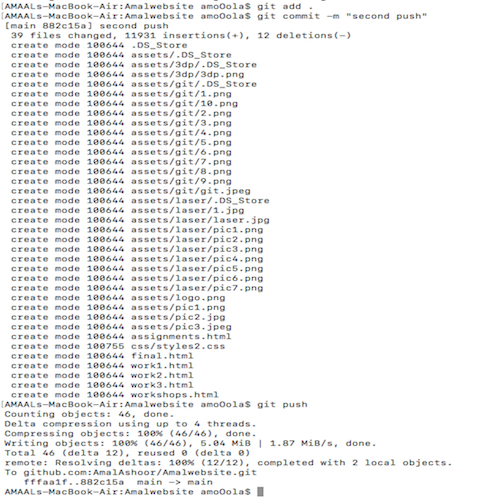

Goal: Learn about Github and establish and customize a website utilizing HTML.
1- Establish a repository in Github after registration.
2- Connect the established repository with the used PC.
3- Push modifications from the PC to Github.
4- Start a website in Github and edit it from the PC.
1- Download Git software from the website and install it on your PC, which is MacBook Air in my case.

2- To ensure that the previous step is done, open Terminal software and enter the following command: [ $ git --version].

3- Use Terminal to open the desktop using : [ $ cd Desktop]. Then, make a new folder with the name "myfabacademy" using: [ $ mkdir myfabacademy].

4- After you register in Github, establish a new public repository with the name "Amalwebsite".

5- To connect between the PC and Github website, configure Git on the PC using the user name and email used in the registration step and two commands
in Terminal at "myfabacademy" folder : [$ git config --global user.name "AmalAshoor"] and [$ git config --global user.email "amalashoor135@gmail.com"].
Here, you will notice a new fold exists within "myfabacademy" folder called "Amalwebsite".


6- To copy all the documents available on your Github website, copy the SSH clone link and paste it in Terminal in the following format:
[$ git clone copied_link]. Be careful that Terminal is opening "myfabacademy" folder.

7- Generate SSH key using: [$ ssh-keygen -t ed25519 -C "amalashoor135@gmail.com"]. Please be aware of the place where this key is saved.

8- Open the saved SSH folder and the id.pub file with Brackets and copy the key.
9- Open your Github profile then click settings, SSH and GPG Keys, New SSH key. After that paste the copied key.
10- If you added a file to "Amalwebsite" and you would like to check if the website page at Github is updated, use : [$ git status].
The missing files' names will be shown in red color.

11- To add the missing file to the Github website page, use three commands which are: [$ git add .], [$ git commit -m "write a comment"], and [$ git push].
1- Download a website template from the Start Bootstrap website in the "myfabacademy" folder. Then, transfer all the files from
the downloaded folder into "Amalwebsite" folder.

2- Repeat step 11 to update the Github website page.
3- On the Github website page, to set the repository click settings the Github Pages then click on Main Branch then Save.
Thus, the website is published in the given link.
4- To edit the website, open index.html using Brackets software.